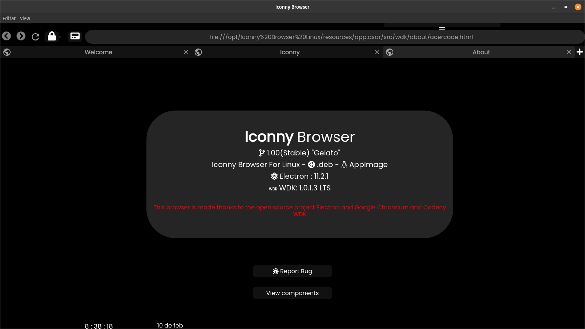
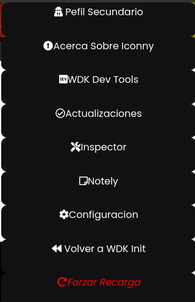
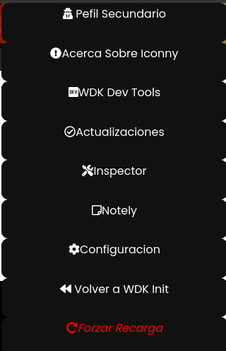

Iconny Browser Linux "Gelato" 1.00 Stable
Escrito por Admin 10/02/2021

Despues de 1 mes de desarrollo y 10 dias de pruebas y 1 nueva version nos complace anunciar el lanzamiento de Iconny Gelato este esta enfocado a mejorar la interfaz del usuario
ademas de mejorar el rendimiento y estabilidad y es porque ha tenido el lanzamiento mas tardio de entre la anterior estable y esta nueva estable que han sido un total de 23 dias
ademas en este post daremos la nuevas fechas para el proximo lanzamiento ademas con sus nombres
Novedades
Como primera novedad es que hemos incluido MonocromatixV4 Light que es para las personas que no le gustan darkmode
MonocromatixV4 Light
Como segunda es que ahora se puede regresar al init de WDK desde el dropdown

Dropdown
Tercera novedad ahora se pueden ver todos los componentes que conforman el navegador

Seccion componentes
Cuarta novedad es que se reacomodo todos los archivos para que sea mas ordenado
Quinta novedad es que ahora ya no se usa el controlador de webviews de WDK LTS ahora se usa WebVi
Como segunda es que ahora se puede regresar al init de WDK desde el dropdown

Dropdown
Tercera novedad ahora se pueden ver todos los componentes que conforman el navegador
Seccion componentes
Cuarta novedad es que se reacomodo todos los archivos para que sea mas ordenado
Quinta novedad es que ahora ya no se usa el controlador de webviews de WDK LTS ahora se usa WebVi
Los repositorios de Iconny Updates y el repositorio principal seran actualizados en las proximas horas para descargar "Gelato"
Lastimosamente por el momento todavia no se tiene lista la version snap
Otros cambios menores :
Esperamos que les guste estos nuevas funciones y cambios y que disfruten de mas estabilidad
Se ha dedicado mucho esfuerzo en esta version
Atte Administrador Descargar "Gelato" 1.00 Stable .AppImage
Descargar "Gelato" 1.00 Stable .deb
Descargar "Gelato" 1.00 Stable .rpm
Ver Release En Github